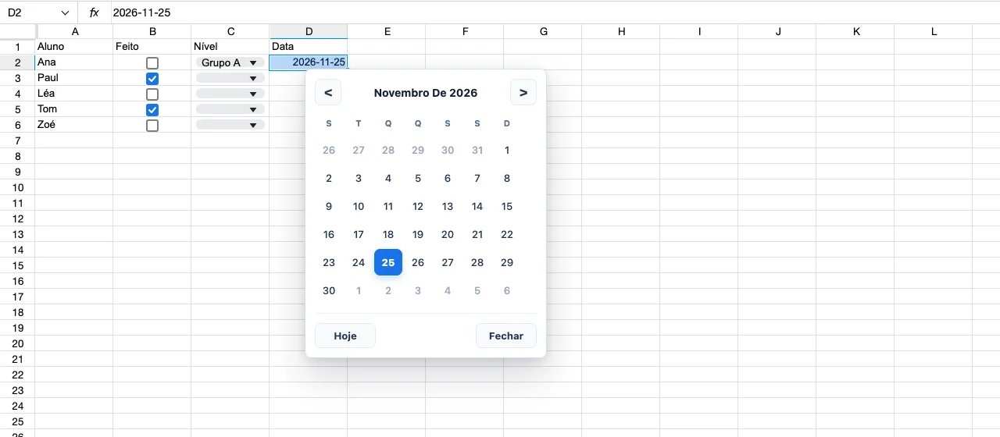

Caixas, listas e calendário

Caixas de verificação
Selecionar as células, Inserir › Caixa de seleção. Um clique marca ou desmarca; a célula vale TRUE ou FALSE.
=SE(B2; "feito"; "por fazer")
=SOMARPRODUTO(B2:B6; C2:C6)
=SOMARPRODUTO(B2:B6; B2:B6)A segunda fórmula soma os valores da coluna C cuja caixa está marcada; a terceira conta as caixas marcadas.
Listas pendentes
Selecionar as células, Inserir › Lista pendente….
| Origem | Conteúdo |
|---|---|
| Valores | as opções, uma por campo; Adicionar opção; sem vírgula |
| A partir de um intervalo | um intervalo cujas células são as opções: Folha2!$A$1:$A$10 |
Um intervalo sem $ desloca-se de uma célula para outra, como uma fórmula preenchida. Se as suas células mudam, as opções acompanham.
A célula mostra uma seta; um clique abre as opções. Um valor diferente dos da lista não é aceite.
Calendário
Um duplo clique numa célula de data abre um calendário: escolher um dia, mudar de mês com < e >, Hoje para a data de hoje. Abre-se em qualquer célula com formato de data, mesmo vazia, salvo se contém uma fórmula ou está bloqueada.
Para uma coluna de datas a preencher com o calendário: selecioná-la e dar-lhe o formato Data.
Retirar
Delete retira a caixa ou a lista da célula, com o seu valor.
Caixas e listas são guardadas no ficheiro Excel; as caixas são aí caixas de verificação do Excel.